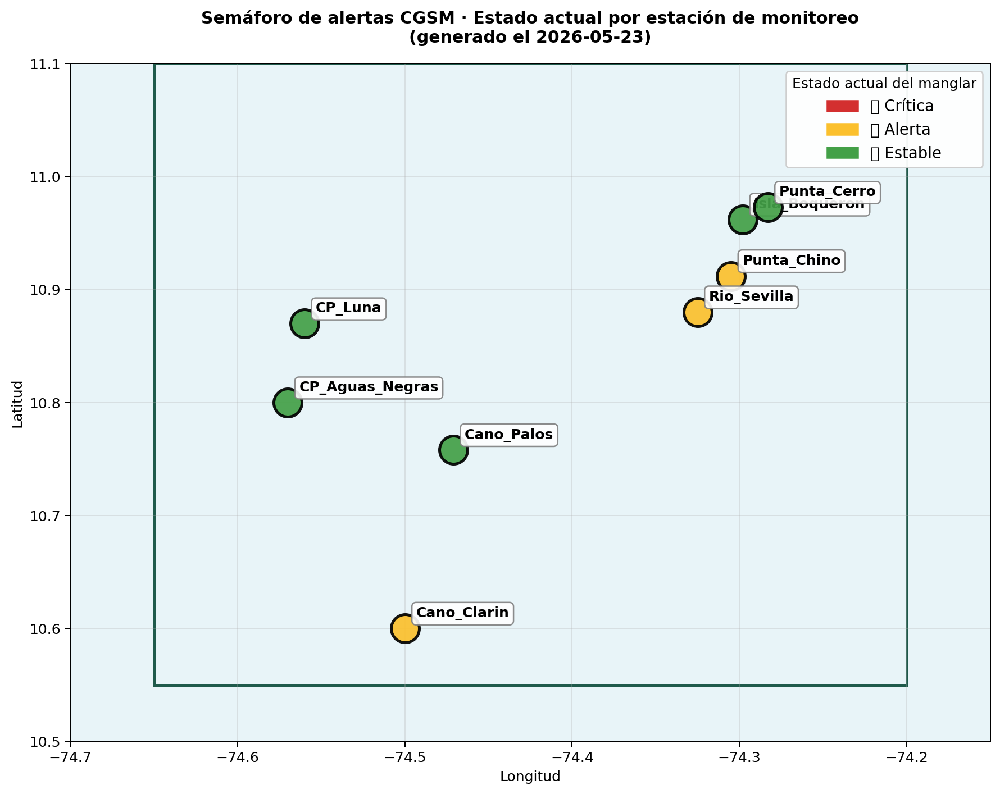
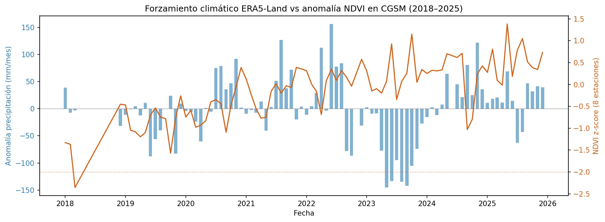
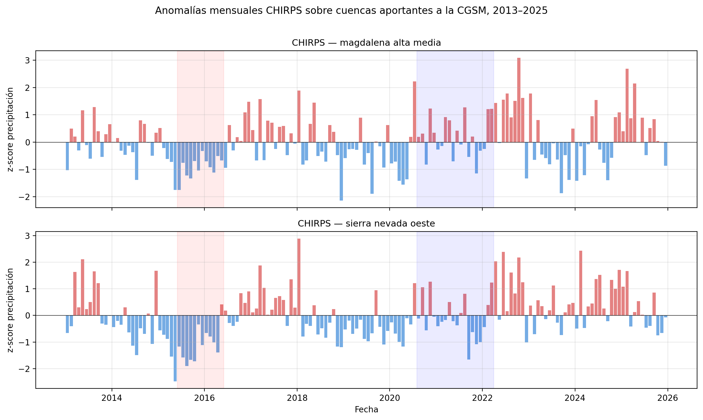
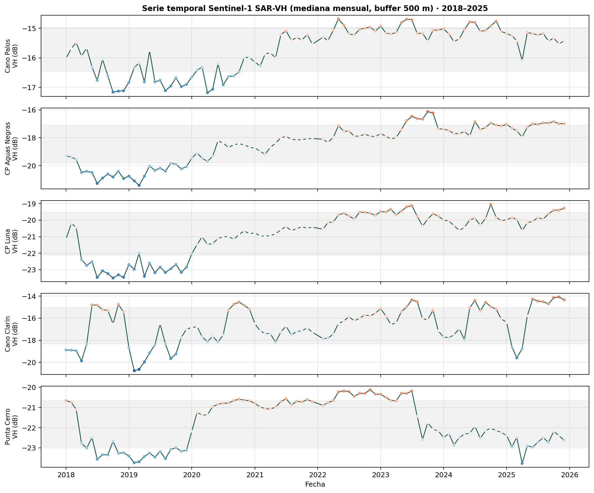
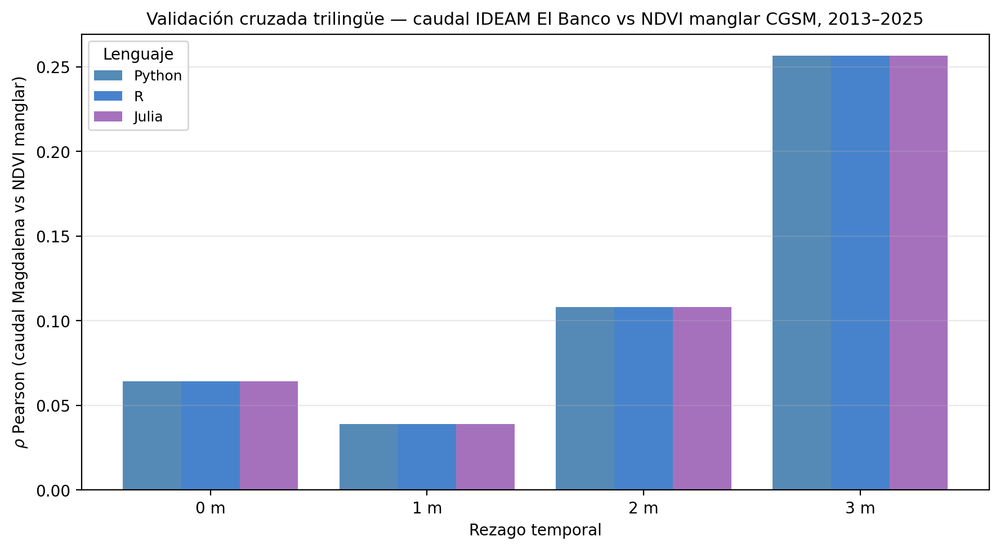
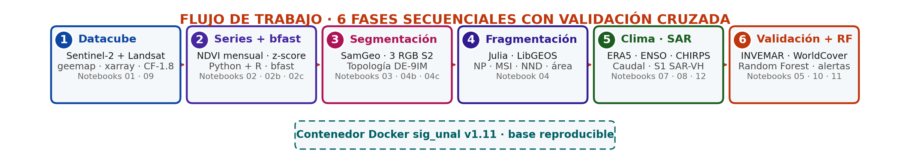
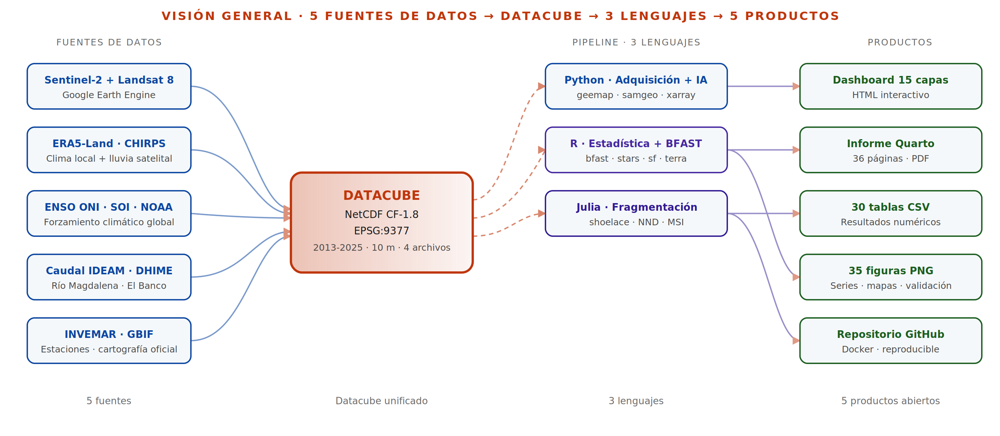

Estado del manglar de la Ciénaga Grande de Santa Marta al cierre de 2025
Los cinco indicadores resumen el estado del manglar de la Ciénaga Grande de Santa Marta al cierre del periodo de análisis, sobre el área protegida oficial conformada por el SFF CGSM y la Vía Parque Isla de Salamanca, con una extensión aproximada de 835 km². También integran la magnitud del evento de inundación asociado a La Niña 2020 y la relación estadística entre el caudal del río Magdalena y el vigor del dosel. El NDVI mide el vigor de la vegetación en una escala de 0 a 1 a partir de la respuesta espectral en las bandas roja e infrarroja cercana. Cada indicador se desarrolla en las secciones siguientes y puede explorarse espacialmente en el mapa interactivo.
Manglar protegido hoy
4.037 ha
Área protegida total
835 km²
Inundado durante La Niña 2020
59 km²
Vínculo caudal río – manglar
+0,26
Años de monitoreo continuo
13
Cómo leer este monitor
Este monitor puede leerse en cinco niveles: estado actual del manglar, cambios de vigor NDVI, inundación SAR durante La Niña 2020, relación con caudal, precipitación y ENSO, y estado operativo por estación mediante semáforo de alertas.
Fuentes NASA y observación terrestre
Detalle completo en la sección Fuentes NASA ↗.
NDVI mediano del manglar denso · 2018–2025

Serie mensual de NDVI sobre las cuatro estaciones de manglar denso. Se observa un descenso del vigor del dosel hacia mediados de 2020, durante el episodio La Niña 2020-2021, seguido por una recuperación sostenida desde 2022. Las bandas sombreadas indican los tres periodos de referencia: degradación, recuperación y estado actual.
Diferencia NDVI · 2020 vs. 2024-2025

Los tonos azules indican ganancia relativa de vigor vegetal y los tonos rojos pérdida relativa entre el periodo de degradación y el estado actual. El predominio de valores positivos es consistente con la recuperación espectral del dosel en buena parte del AOI acotado.
Mapa interactivo · navega y compara periodos
Cronología de quiebres BFAST · 2013–2025
- 2016Quiebre estructural generalizado en 7 de 8 estaciones, asociado al evento El Niño 2015-2016.
- sep 2020Segunda perturbación mayor (anomalía NDVI z < −3 en 2 de 8 estaciones) bajo La Niña 2020-2021. Quiebres BFAST en Caño Palos (jul-2020) y Caño Clarín (feb-2020, abr-2021).
- 2022Quiebres adicionales en CP Aguas Negras (abr-2022) y CP Luna (ene-2022) por excedente hídrico post-Niña.
- 2023–24Tercer bloque: CP Aguas Negras (oct-2023), Caño Palos (jul-2024) y CP Luna (jul-2024), coincidente con El Niño 2023-2024 visible en el índice ONI.
- 2001–1714 inundaciones documentadas (Global Flood Database). Máximo histórico: DFO_2625 (feb 2005), 299 km² afectados.
Los quiebres se estimaron sobre una serie mensual continua construida con Landsat 8 para 2013-2017 y Sentinel-2 para 2018-2025. Las anomalías NDVI se definieron como valores con z-score menor a −2 respecto a la media histórica de cada estación, mientras que los cambios estructurales de tendencia se identificaron mediante BFAST.
Estado operativo por estación

Cada estación se clasifica en tres niveles operativos según la severidad y persistencia de las anomalías NDVI recientes: estable, alerta o crítica. Al cierre del periodo evaluado, cinco estaciones se encuentran estables, tres en alerta y ninguna en estado crítico.
| Estación | Naturaleza | Estado | z actual | NDVI actual |
|---|---|---|---|---|
| CP Aguas Negras | manglar denso | estable | +1,63 | 0,770 |
| CP Luna | manglar denso | estable | +2,38 | 0,664 |
| Caño Palos | manglar denso | estable | +1,25 | 0,849 |
| Isla Boquerón | limnológica | estable | +0,81 | 0,308 |
| Punta Cerro | limnológica | estable | +0,15 | 0,145 |
| Caño Clarín | manglar denso | alerta | +0,31 | 0,735 |
| Punta Chino | limnológica | alerta | +0,69 | 0,337 |
| Río Sevilla | limnológica | alerta | +0,61 | 0,215 |
Monitor near-real-time · bfastmonitor + z-score
La lógica del semáforo de alertas integra dos señales complementarias sobre cada estación.
La primera es el z-score reciente del NDVI, calculado sobre la serie mensual
combinada Landsat 8 + Sentinel-2, que detecta anomalías de los últimos doce meses. La
segunda es la salida de bfastmonitor (Verbesselt et al., 2012), aplicada en
el notebook 06b_bfast_monitor_R.ipynb con ventana histórica 2013-2019 y
periodo de monitoreo 2020-2025.
A diferencia del BFAST clásico, bfastmonitor opera de forma online: cada nueva composición mensual recalcula el estado de la estación sin reajustar la serie histórica, lo que permite usarlo como capa operativa del Nivel 2 del Digital Twin. La escalada del semáforo combina ambas señales: una estación pasa a crítica cuando coinciden un breakpoint de magnitud negativa con z mínimo inferior a −1 en los tres meses recientes; pasa a alerta cuando se detecta breakpoint aunque la anomalía z sea moderada; y se conserva como estable solo cuando ninguna de las dos señales reporta deterioro.
Entrada del monitor: outputs/tables/ndvi_combinado_2013_2025.csv.
Salida: outputs/tables/bfastmonitor_estaciones.csv
(columnas: estación · breakpoint · magnitud · estado), consumida por
src/python/alertas_manglar.py.
Contracción del área con consolidación estructural
Entre 2020 y 2025, el área clasificada como manglar pasó de 12.426 ha a 4.037 ha, mientras que el número de fragmentos disminuyó de 79 a 15. En paralelo, el tamaño medio de los parches aumentó de 157 ha a 269 ha y el NDVI mediano del dosel se recuperó de 0,60 hacia 2020 a 0,80 desde 2022. Este patrón sugiere consolidación estructural de los parches sobrevivientes, más que una pérdida homogénea del ecosistema.
Fragmentos en 2020
79
Fragmentos en 2022
38
Fragmentos hoy (2024-25)
15
Consolidación de los fragmentos
+71 %
Validación con cartografía oficial
✓
NDVI mediano por periodo · degradación / recuperación / actual

Mediana del NDVI por periodo sobre el AOI acotado. La zona central presenta menor vigor en 2020 y una recuperación visible en 2024-2025.
Métricas de fragmentación del paisaje · por periodo
| Periodo | Parches | Área (ha) | Área media (ha) | MSI | NND (km) |
|---|---|---|---|---|---|
| degradación (2020) | 79 | 12.425,63 | 157,29 | 0,51 | 1,10 |
| recuperación (2022) | 38 | 8.650,75 | 227,65 | 1,01 | 1,99 |
| actual (2024-25) | 15 | 4.037,02 | 269,13 | 1,46 | 2,39 |
El patrón muestra una reducción del número de parches, aumento del área media, incremento del índice de forma medio y mayor distancia al vecino más cercano. En conjunto, estos cambios indican consolidación e incremento del aislamiento espacial del manglar clasificado como sobreviviente. Las métricas fueron calculadas en Julia sobre polígonos reproyectados al sistema EPSG:9377.
Inundación SAR · evento septiembre-octubre 2020
Detección de inundación por diferencia de retrodispersión Sentinel-1 SAR-VH entre el periodo seco de referencia (enero-marzo de 2020, 49 imágenes) y el periodo de inundación (septiembre-octubre de 2020, 36 imágenes). Con la convención SAR diff = seco − inundación, se identificó agua abierta cuando SAR diff fue superior a +3 dB, asociada con reflexión especular (pierde retrodispersión al inundarse), y manglar inundado bajo dosel cuando SAR diff fue inferior a −2 dB, compatible con dispersión de doble rebote agua-tronco (gana retrodispersión al inundarse).
| Mecanismo | Área afectada | % del AOI |
|---|---|---|
| Agua abierta | 15,93 km² | 1,9 % |
| Bajo dosel | 43,08 km² | 5,2 % |
| Total inundado | 59,02 km² | 7,1 % |
El radar Sentinel-1 distinguió por primera vez para el evento ambos mecanismos de afectación; la inundación bajo dosel triplica al agua abierta en superficie.
Dinámica hídrica de largo plazo · JRC 1984-2021
| Transición de superficie | Área |
|---|---|
| Pérdida de agua permanente | −18,55 km² |
| Ganancia de agua permanente | +23,55 km² |
| Balance neto | +5,00 km² |
JRC Global Surface Water (Pekel et al., 2016): el sistema redistribuye su lámina de agua más que la pierde. Balance positivo modesto en 37 años, consistente con la dinámica deltaica activa del río Magdalena.
Random Forest · importancia relativa de variables

SWIR (B11 y B12) y distancia al agua son las variables más discriminantes para el manglar de la CGSM, seguidas por los índices espectrales (NDVI, NDWI). La incorporación de SAR Sentinel-1 (banda VH) aporta robustez bajo nubosidad.
Validación cuantitativa contra cartografía oficial
| Clasificador | F1 vs INVEMAR | F1 vs WorldCover |
|---|---|---|
| Umbrales NDVI | 0,583 | 0,548 |
| Random Forest | 0,826 | 0,889 |
El acuerdo directo INVEMAR ↔ WorldCover es F1 = 0,833, lo que define un techo metodológico realista. El clasificador por umbrales alcanza ~70 % de ese techo; Random Forest lo supera con mejoras del 42 % (vs INVEMAR) y 62 % (vs WorldCover) sobre el método determinístico. Recall sostenida en 0,43–0,45 con umbrales confirma una subestimación atribuible al criterio conservador NDVI > 0,70.
Acoplamiento climático-hidrológico del manglar
El manglar de la CGSM depende del aporte de agua dulce del río Magdalena y de los ríos provenientes de la Sierra Nevada de Santa Marta para amortiguar la hipersalinización, uno de sus principales estresores históricos. Esta sección cruza variables climáticas e hidrológicas con las anomalías NDVI del manglar para evaluar asociaciones temporales en rezagos de cero a tres meses.
La matriz permite identificar qué forzamientos presentan mayor asociación con la respuesta espectral del dosel y en qué rezago temporal. Los tonos verdes representan correlaciones positivas, los rojos correlaciones negativas y los tonos claros asociaciones débiles o cercanas a cero.
Caudal típico río Magdalena
3.750 m³/s
Pico extremo durante La Niña
5.921 m³/s
Vínculo La Niña – manglar
+0,20
Inundaciones históricas registradas
16
Caudal mensual · Magdalena (El Banco) y Aracataca (Ganadería Caribe)

Series IDEAM/DHIME 2013-2025. Pico histórico en 2022 asociado al excedente hídrico post La Niña 2020-2021. Franjas sombreadas: eventos ENSO documentados.
Correlación de Pearson · forzamiento climático ↔ NDVI manglar
| Forzamiento climático | Lag 0 | Lag 1 | Lag 2 | Lag 3 |
|---|---|---|---|---|
| ERA5 precipitación local | −0,081 | −0,081 | −0,123 | −0,020 |
| ENSO ONI | +0,027 | −0,007 | −0,039 | −0,070 |
| ENSO SOI | +0,143 | +0,198 | +0,146 | +0,058 |
| Caudal Magdalena (El Banco) | +0,064 | +0,039 | +0,108 | +0,256 |
| Caudal Aracataca (Ganadería Caribe) | +0,196 | +0,224 | +0,184 | +0,180 |
| CHIRPS precipitación regional | +0,075 | +0,170 | +0,097 | +0,252 |
Las asociaciones positivas más altas se observan en los caudales fluviales, especialmente para el río Magdalena en rezago de tres meses. Este patrón es compatible con una respuesta retardada del dosel al régimen fluvial. La precipitación local ERA5 muestra una correlación negativa débil en rezago de dos meses, coherente con posibles condiciones de estrés por inundación bajo dosel.
Forzamientos y respuesta · vista integrada 2018-2025

Panel integrado de anomalía NDVI del manglar, caudal IDEAM, índice ONI y precipitación CHIRPS. La visualización permite comparar la respuesta del dosel con eventos climáticos regionales como La Niña 2020-2021 y El Niño 2023-2024, sin asumir causalidad directa entre las series.
Índices ENSO ONI y SOI · 2013-2025

ONI > 0,5 indica condiciones El Niño y ONI < −0,5 condiciones La Niña. Durante el periodo evaluado se destacan tres eventos: El Niño 2015-2016, La Niña 2020-2022 y El Niño 2023-2024, los cuales coinciden temporalmente con cambios relevantes en las series de NDVI y caudal.
Precipitación CHIRPS · cuencas Magdalena y Aracataca

La precipitación CHIRPS sobre las cuencas aportantes muestra un máximo regional en 2022. Esta señal antecede entre uno y tres meses la recuperación del NDVI del manglar, en una secuencia compatible con la trayectoria precipitación regional → caudal → respuesta del dosel.
Sentinel-1 SAR-VH · serie temporal por estación 2018-2025

La serie mensual SAR-VH aporta sensibilidad frente a cambios estructurales bajo dosel que pueden no ser evidentes en sensores ópticos. Las correlaciones positivas entre SAR-VH y NDVI en las estaciones de manglar denso del Complejo de Pajarales sugieren una señal estructural coherente entre vigor espectral y retrodispersión radar.
Distribución de roles y verificación cruzada
El flujo distribuye las tareas según las fortalezas de cada lenguaje. Python centraliza el procesamiento en Google Earth Engine, la construcción de productos geoespaciales, la segmentación con SamGeo y el dashboard. R se utiliza para el análisis de series temporales, BFAST y validaciones ecohidrológicas. Julia se emplea para métricas de fragmentación, cálculo geométrico y predicados topológicos sobre los polígonos vectoriales.
La reproducibilidad se evaluó mediante pruebas cruzadas entre Python, R y Julia sobre las mismas series temporales y los mismos polígonos. Las salidas coinciden hasta el tercer decimal en las correlaciones y mantienen consistencia en los conteos topológicos, lo que indica que los resultados no dependen de una implementación única.
Cuadernos en Python
15
Cuadernos en R
4
Cuadernos en Julia
3
Total · principales + legacy
29 = 22 + 7
Convergencia Python = R = Julia · correlación caudal-NDVI por rezago

Tres barras por rezago (una por lenguaje) visualmente indistinguibles. Los valores coinciden hasta el tercer decimal, demostrando que el resultado es independiente de la implementación.
Pruebas cruzadas · convergencia numérica entre implementaciones
| # | Análisis | Lenguajes | Resultado |
|---|---|---|---|
| 1 | ENSO ONI/SOI vs NDVI | Python ↔ R | 8 filas idénticas |
| 2 | Caudal IDEAM vs NDVI | Python ↔ R | 16 filas idénticas |
| 3 | Correlación caudal-NDVI por rezago | Python = R = Julia | 4 rezagos idénticos |
| 4 | Conteo de parches DE-9IM * | Python ↔ Julia | 17 / 17 / 15 |
* Sobre la prueba 4: Python y Julia cuentan exactamente los mismos 17 parches al aplicar los predicados DE-9IM sobre el mismo conjunto de polígonos. El valor 15 que aparece en la columna no es una divergencia entre lenguajes: corresponde al conteo final después de filtrar por área mínima en el pipeline (detalle en el Anexo C del informe).
Las pruebas se ejecutan dentro del contenedor Docker reproducible y permiten verificar la consistencia de los resultados entre lenguajes. Cualquier divergencia relevante debe revisarse antes de actualizar los productos finales del dashboard.
Sobre este monitor
Pipeline multilenguaje GeoAI para el monitoreo del manglar en la Ciénaga Grande de Santa Marta · 2013–2025
Este monitor presenta un pipeline multilenguaje GeoAI para caracterizar la dinámica del manglar de la Ciénaga Grande de Santa Marta entre 2013 y 2025. El flujo integra imágenes Landsat 8/9, Sentinel-2, radar Sentinel-1 SAR y forzamientos climáticos e hidrológicos para analizar cobertura, fragmentación, vigor vegetal, inundación y respuesta hidroclimática del manglar.
El procesamiento se ejecuta en un entorno Docker reproducible y se valida frente a cartografías de referencia como INVEMAR 1:25.000 y ESA WorldCover v200. Los términos técnicos utilizados en el monitor se explican en el glosario técnico.
Pregunta de investigación
¿Cómo ha variado la cobertura, la fragmentación y el vigor del manglar de la Ciénaga Grande de Santa Marta entre 2013 y 2025, y qué relación temporal y estadística presentan las perturbaciones detectadas con los forzamientos climáticos asociados a los eventos ENSO del periodo?
Fuentes de datos
- Sentinel-2 SR Harmonized (ESA): 789 imágenes 2018–2025
- Landsat 8/9 Collection 2 (USGS-NASA): 345 registros 2013–2017
- Sentinel-1 SAR (ESA): inundación bajo dosel septiembre 2020
- SRTM v3 (NASA): restricción geofísica
- Global Flood Database (Dartmouth Flood Observatory): 16 eventos históricos
- JRC Global Surface Water: dinámica hídrica 1984–2021
- ESA WorldCover v200 (Zanaga et al., 2022): validación cartográfica
- INVEMAR 1:25.000 (2020): cartografía oficial colombiana
- IDEAM / DHIME: caudal río Magdalena (El Banco) y río Aracataca (Ganadería Caribe)
- CHIRPS v2.0 (Funk et al., 2015): precipitación regional
- NOAA CPC: índices ENSO ONI y SOI
- ERA5-Land (Hersbach et al., 2020): forzamiento climático local
Stack técnico
Fuentes NASA y observación terrestre
El pipeline integra datos de observación de la Tierra de NASA-USGS, ESA, NOAA, IDEAM, INVEMAR y otras fuentes abiertas. Estos insumos permiten articular monitoreo satelital, validación cartográfica y análisis hidroclimático para apoyar el seguimiento ambiental del manglar y el desarrollo de alertas tempranas.
| Fuente | Agencia | Uso en el pipeline | Cantidad |
|---|---|---|---|
| Landsat 8 | NASA-USGS | Serie histórica NDVI 2013-2017 | 345 registros |
| Landsat 9 | NASA-USGS | Continuidad serie 2022-2025 | 89 registros |
| SRTM v3 | NASA | Restricción geofísica (cota < 10 m) | DEM 30 m |
| NOAA CPC | NOAA | Índices ENSO ONI/SOI (forzamiento climático) | 2013-2025 mensual |
| Global Flood Database | Dartmouth Flood Obs. (deriva de MODIS NASA + S1 ESA) | Inventario histórico de inundaciones | 14 eventos · 2001-2017 |
| SamGeo | Prof. Qiusheng Wu (OpenGeos) | Segmentación promptable del manglar (SAM) | 3 periodos de referencia |
El pipeline aporta un sistema operacional de alerta temprana basado en datos satelitales públicos, aplicado a la salud del ecosistema de manglar y a los servicios ecosistémicos de las comunidades pesqueras de Tasajera, Pueblo Viejo y Buenavista. Tema afín a la línea Flood Early Warning de NASA Lifelines.
Área de estudio · Ciénaga Grande de Santa Marta

(a) Colombia con el departamento del Magdalena. (b) Departamento con ciudades de referencia y bbox del AOI en rojo. (c) Composite Sentinel-2 RGB del periodo actual (2024-2025): polígono rojo del AOI acotado (835 km², SFF CGSM + VPI Salamanca), triángulos rojos de las 5 estaciones INVEMAR-GBIF, cobertura de manglar segmentada por SamGeo en verde traslúcido.
Flujo de la metodología · de la imagen al indicador

Flujo metodológico en seis fases secuenciales: ingesta GEE, construcción del datacube, análisis de series con BFAST, segmentación SamGeo con métricas topológicas DE-9IM, fragmentación en Julia, forzamiento climático e hidrológico, y validación cartográfica frente a INVEMAR 1:25.000 y ESA WorldCover. Pruebas cruzadas Python ↔ R ↔ Julia verifican la convergencia numérica entre implementaciones. Toda la cadena corre dentro de un contenedor Docker reproducible.
Glosario técnico
- AOI
- Área de interés. Aquí: AOI acotado = SFF CGSM + Vía Parque Isla de Salamanca (835 km²).
- NDVI
- Índice diferencial de vegetación normalizado. Escala 0-1, valores altos indican dosel denso y sano.
- NDWI
- Índice diferencial de agua normalizado. Discrimina cuerpos de agua y suelo húmedo.
- SAR / VH
- Radar de apertura sintética (Sentinel-1), polarización vertical-horizontal. Independiente de nubosidad.
- SWIR
- Infrarrojo de onda corta (bandas B11, B12 de Sentinel-2). Sensible al contenido de agua del dosel.
- MSI
- Mean Shape Index. Razón perímetro/área de los parches. 1 = forma simple, >1 = bordes irregulares.
- NND
- Nearest Neighbor Distance. Distancia media al parche más cercano.
- F1 / Recall / Precision
- Métricas de exactitud de clasificación. F1 es la media armónica entre Precision y Recall.
- BFAST
- Breaks For Additive Season and Trend (Verbesselt et al., 2010). Detecta quiebres estructurales en series temporales.
- Random Forest
- Clasificador supervisado de ensamble basado en árboles de decisión.
- z-score
- Anomalía estandarizada respecto a la media histórica. z < −2 = anomalía significativa.
- ENSO / ONI / SOI
- El Niño-Southern Oscillation. Índices Oceanic Niño Index (NOAA, temperatura) y Southern Oscillation Index (presión atmosférica).
- SFF / VPI
- Santuario de Fauna y Flora CGSM / Vía Parque Isla de Salamanca. Áreas protegidas que conforman el AOI acotado.
- INVEMAR
- Instituto de Investigaciones Marinas y Costeras "José Benito Vives de Andréis". Cartografía oficial colombiana del manglar 1:25.000 (2020).
- IDEAM / DHIME
- Instituto de Hidrología, Meteorología y Estudios Ambientales. Plataforma DHIME para descarga de caudales.
- CHIRPS
- Climate Hazards Group InfraRed Precipitation with Station data v2.0 (Funk et al., 2015).
- ERA5-Land
- Reanálisis climático de alta resolución de ECMWF (Copernicus).
- GEE / SamGeo
- Google Earth Engine (procesamiento satelital en la nube) y Segment Anything for Geospatial (segmentación automática).
- JRC GSW
- JRC Global Surface Water (Pekel et al., 2016). Dinámica histórica de agua superficial 1984-2021.
- Ramsar
- Convención sobre humedales de importancia internacional. La CGSM es sitio Ramsar Nº 562 desde 1998.
Arquitectura de datos · qué hace cada lenguaje
